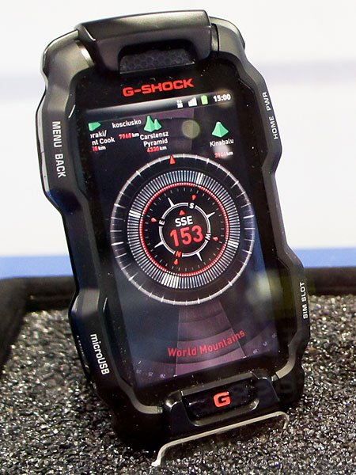
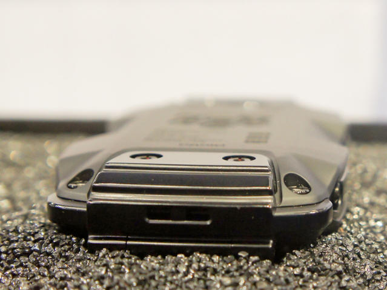
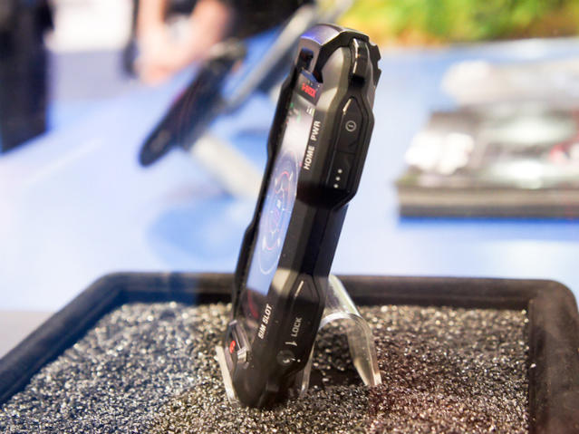
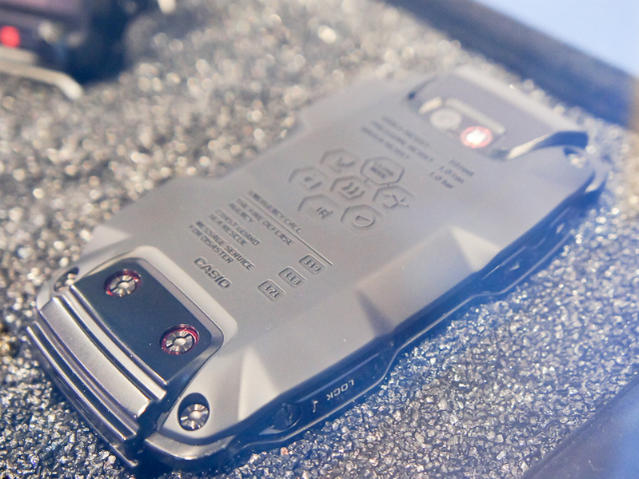
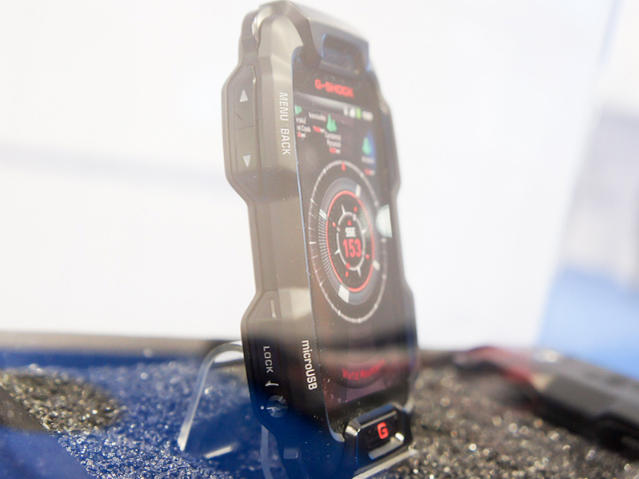

发信人: quavavav (Bear), 信区: outdoor
标 题: Casio G-Shock Phone 卡西欧三防机
发信站: 饮水思源 (2012年03月07日12:17:22 星期三)
Casio G-SHOCK PHONE
 screen.width - 200){this.width = screen.width - 200}">
 screen.width - 200){this.width = screen.width - 200}">
 screen.width - 200){this.width = screen.width - 200}">
 screen.width - 200){this.width = screen.width - 200}">
 screen.width - 200){this.width = screen.width - 200}">
Would you buy a Casio G-Shock phone running Android? Casio hopes you will. The
company is currently in the process of developing a rugged G-Shock phone that
will be able to withstand a number of things that would simply destroy any ot
her ordinary phone.
According to Japanese site My Navi, the Casio G-Shock phone can withstand drop
s from up to 10 feet, is water resistant up to 10 meters, and can handle up to
one ton of weight on it without feeling the pressure. The phone is currently
in its prototype phase. No word on when it will be available or what version o
f Android it will be running.
Based on the image, Casio plans to make major modifications to the Android but
ton layouts we’re used to seeing; the menu, home, and back buttons have been
relocated to the side of the phone, something that’s new to my eyes.
So, what do you guys think about this concept phone? Will you be picking one u
p when/if it launches? Let us know by dropping a comment below.
http://www.droidmatters.com/news/casios-concept-g-shock-phone-runs-android-resists-falls-water-and-weight/
--
昨晚看着一款铱星的卫星电话问卖家有没有俄罗斯方块可以玩，哎……
※ 来源:·饮水思源 bbs.sjtu.edu.cn·[FROM: 202.121.180.233]
※ 修改:·quavavav 于 2012年03月07日12:19:38 修改本文·[FROM: 202.121.180.233]
※ 修改:·quavavav 于 2012年03月07日12:20:38 修改本文·[FROM: 202.121.180.233]
|